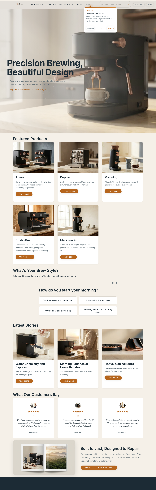
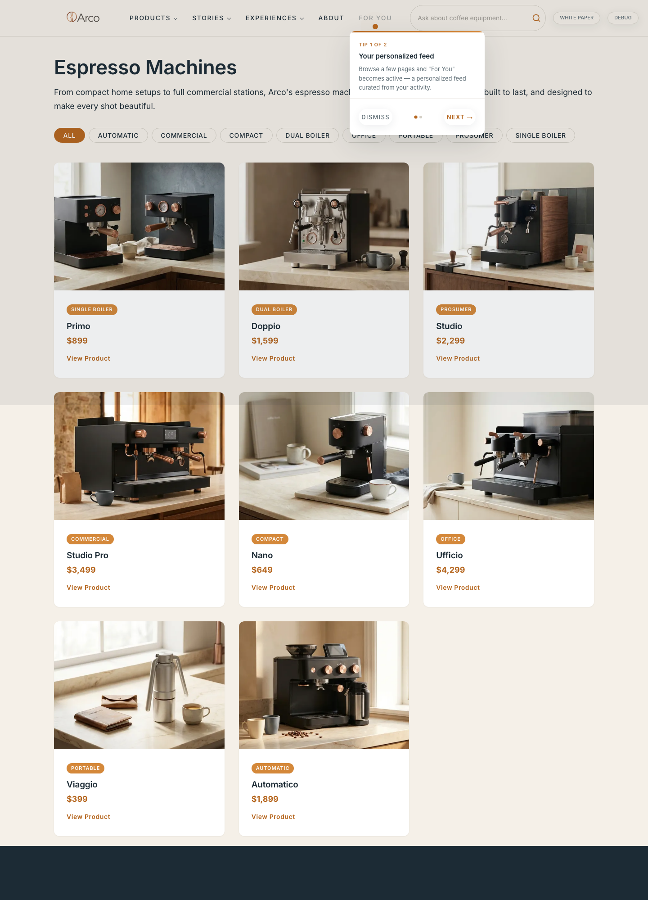
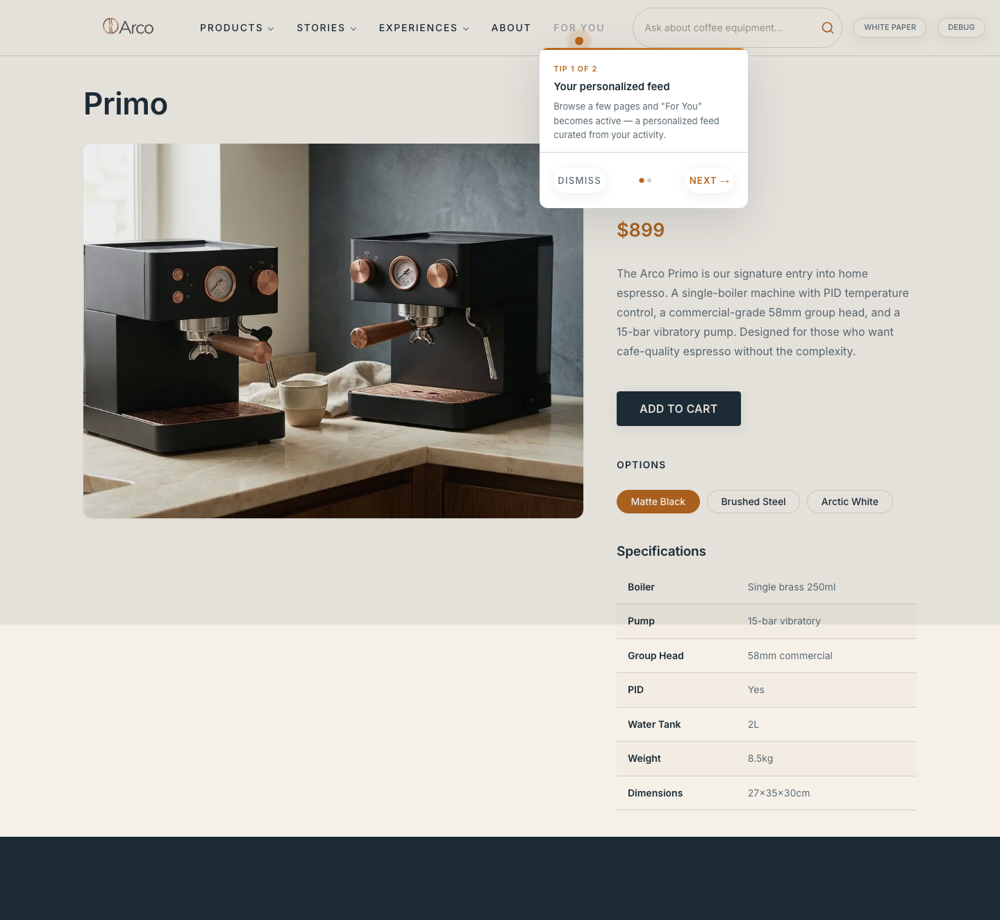
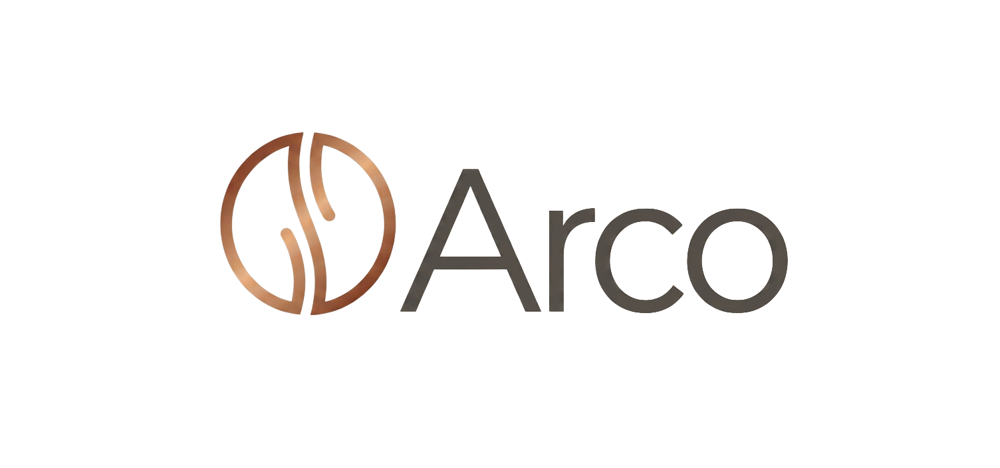

https://main--arco--aem-growth-adoption.aem.page
Arco
Precision Brewing, Beautiful Design
Arco crafts espresso machines and grinders for people who care about every detail — from bean to cup.
Coverage
Failures: none · Source: _crawl-log.json
Pagesobserved

Home
Espresso Machines
PrimoColor palettecross-page
text
primary
border
surface
background
text-muted
accent-secondary
Source: _brand-extraction.json § palette
Typographycross-pageNo modular scale
Arco crafts espresso machines and grinders for people who care about every detail — from bean to cup.
Source: _brand-extraction.json § type
Voicehome-onlyinferred: confident, precise, warm-craft
Precision Brewing, Beautiful Design
Arco crafts espresso machines and grinders for people who care about every detail — from bean to cup.
The Arco Primo is our signature entry into home espresso. A single-boiler machine with PID temperature control, a commercial-grade 58mm group head, and a 15-bar vibratory pump. Designed for those who want cafe-quality espresso without the complexity.
CTA frequency
| View Product | 8 |
| Dismiss | 6 |
| Products | 3 |
| Stories | 3 |
| Experiences | 3 |
| About | 3 |
| White paper | 3 |
| Debug | 3 |
Tensions
Type scale is ad-hoc
80 → 44 → 36 → 27 → 19 → 18 → 16 → 14 → 11px, no consistent ratio. Direct will need to decide whether the target adopts a modular scale.
Source: _brand-extraction.json § type.scaleAuditSingle logo variant captured
Only one logo variant captured (header img, PNG raster). The redesign will need a monochrome / inverted / SVG variant set.
Source: _brand-extraction.json § logoAmber appears as background only
Color #D4883A (accent-secondary) appears as background only (gradient bar) — never as text or border. Direct will need to decide: drop, expand, or keep as accent.
Source: _brand-extraction.json § paletteMotifscross-page
Componentsinferred
Explore Machines White paper
System componentscross-page
Logo & faviconhome-only

- Source
- #nav > div:nth-of-type(2) > div > p > a > img
- File
- PNG 1504×704 (wrapped as logo.svg)
- Variants captured
- full-color on light
- Variants not captured
- inverted, monochrome, vector
- Favicon
- assets/favicon.ico
Spacing & shapeinferred
Base unit 8px
8 · 16 · 24 · 32 · 48 · 80